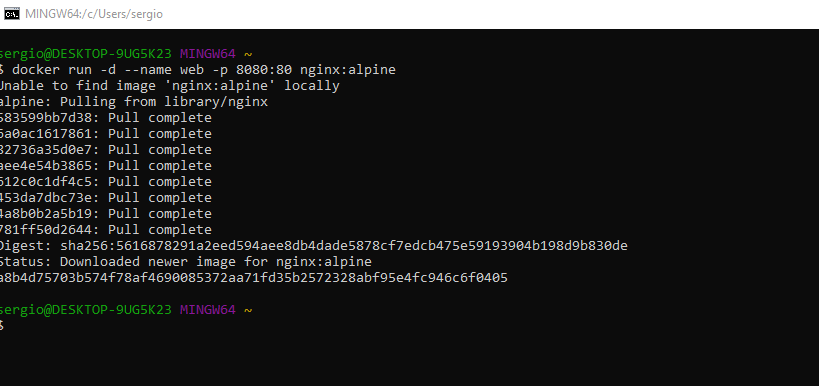
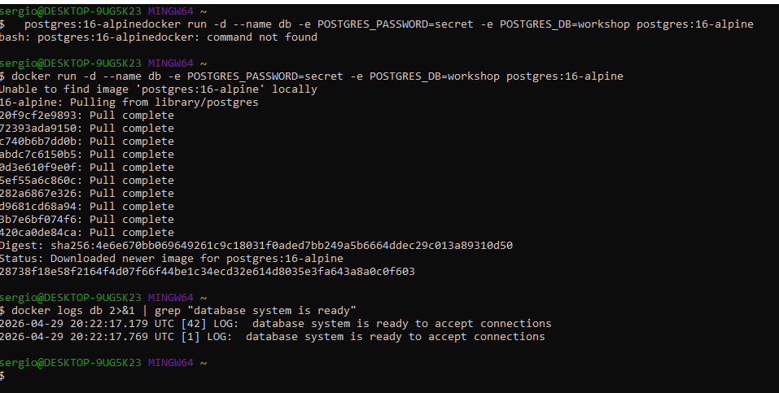

Docker CLI Puro: Exploração Guiada¶
Metodologia: Comando → Executa → Pergunta → Resposta. Pause a cada bloco.
Objetivo: Internalizar o modelo mental de rede, isolamento e ciclo de vida antes de abstrair com YAML.
💡 Nota para Windows:
O curl nativo do CMD/PowerShell pode ter comportamento inconsistente com flags como -sI.
✅ Recomendação: Use WSL2 ou Git Bash para os comandos de terminal deste bloco.
Se precisar usar PowerShell, substitua curl -sI por Invoke-WebRequest -Uri http://localhost:8080 -Method Head.

🔍 1. Portas (p): Mapeamento Host ↔ Container¶
O que o -p realmente faz?
A flag -p HOST:CONTAINER cria uma regra no iptables/NAT do Docker Engine que redireciona tráfego da interface de rede do host para a interface interna do container. O container continua ouvindo na porta original; o Docker faz o "tradutor" de portas.
# 1. Sobe um Nginx mapeando porta 8080 (host) → 80 (container)
docker run -d --name web -p 8080:80 nginx:alpine
# 2. Testa a conexão
curl -sI http://localhost:8080 | head -n 1
# → HTTP/1.1 200 OK
🔍 O que está acontecendo:
- O Nginx dentro do container está ouvindo em
0.0.0.0:80(padrão da imagem). - O Docker Engine intercepta conexões em
localhost:8080no host e as encaminha para172.17.0.2:80(IP interno do container). - O container não sabe que está sendo acessado via porta 8080. Para ele, é uma requisição normal na porta 80.
🧪 Experimentos Guiados:
-
Inspecione o mapeamento ativo:
Isso mostra a regra de NAT criada pelo Docker. Útil para debugar "por que não consigo acessar?".
-
Reproduza o erro de porta ocupada (de forma controlada):
# Tente subir outro container mapeando a MESMA porta do host docker run -d --name web2 -p 8080:80 nginx:alpine # → docker: Error response from daemon: Ports are not available: exposing port TCP 0.0.0.0:8080 -> 0.0.0.0:0: listen tcp 0.0.0.0:8080: bind: address already in use.🔍 Por que acontece: O Docker tenta fazer
bind()na porta 8080 do host, mas o processo do primeiro container (web) já está ocupando esse socket. O kernel do host rejeita. -
Libere a porta e valide:
-
Mapeamento seletivo (localhost apenas):
docker run -d --name internal -p 127.0.0.1:9090:80 nginx:alpine curl -sI http://localhost:9090 | head -n 1 # ✅ Funciona # Tente acessar de outra máquina na rede: http://SEU_IP:9090 → ❌ Timeout🔍 Use case: Serviços que você quer acessar apenas localmente (ex: admin panels, debug endpoints).
🔍 2. Variáveis de Ambiente (e): Injeção ≠ Configuração¶
O que o -e realmente faz?
Ele injeta pares CHAVE=VALOR no ambiente do processo principal (PID 1) do container. Atenção crucial: o Docker não configura seu aplicativo automaticamente. Quem decide ler e usar essas variáveis é o código, o framework ou o script de entrada (entrypoint.sh) da imagem.
✅ Exemplo 1: PostgreSQL (funciona "de fábrica")¶
A imagem oficial do Postgres possui um entrypoint (docker-entrypoint.sh) que lê variáveis como POSTGRES_PASSWORD, POSTGRES_DB e POSTGRES_USER, e executa scripts de inicialização para criar banco, usuário e configurar autenticação.
docker run -d --name db -e POSTGRES_PASSWORD=secret -e POSTGRES_DB=workshop postgres:16-alpine
# Verifique se o banco inicializou
docker logs db 2>&1 | grep "database system is ready"
# → ... database system is ready to accept connections

❌ Exemplo 2: Redis (a armadilha comum)¶
Muitos materiais ensinam -e REDIS_PASSWORD=123. Isso não funciona. O processo redis-server ignora essa variável. Ele só aceita autenticação via argumento de linha de comando (--requirepass) ou via arquivo redis.conf.
# 1. Injeta a variável (o Redis ignora)
docker run -d --name cache -e REDIS_PASSWORD=123 redis:alpine
# 2. Tenta conectar passando a senha
docker exec -it cache redis-cli -a 123 ping
# 📝 Output:
# Warning: Using a password with '-a' or '-u' option on the command line interface may not be safe.
# AUTH failed: ERR AUTH <password> called without any password configured for the default user. Are you sure your configuration is correct?
# PONG
🔍 O que aconteceu?
- O
Warningé padrão doredis-cli(senhas na CLI ficam visíveis no histórico e emdocker ps). - O
AUTH failedacontece porque o Redis não estava configurado com senha. A variávelREDIS_PASSWORDfoi injetada no ambiente, mas o processoredis-servernão foi programado para lê-la. - O
PONGaparece porque o Redis sempre responde aoPING, independente de autenticação. O comandoPINGnão exige auth; só comandos comoGET,SET,CONFIGexigem.
🧪 Prove que a variável está lá (mas é ignorada):
docker exec cache env | grep REDIS
# → REDIS_PASSWORD=123 (A variável ESTÁ lá! Mas o processo não foi programado para lê-la)
💡 Como resolver corretamente?¶
Passe a configuração diretamente para o binário do processo, sobrescrevendo o CMD padrão da imagem:
docker rm -f cache # limpa o container anterior
docker run -d --name cache redis:alpine redis-server --requirepass 123
docker exec -it cache redis-cli -a 123 ping
# → PONG (autenticação funcionando sem erros)
docker exec -it cache redis-cli -a 145 ping
Warning: Using a password with '-a' or '-u' option on the command line interface may not be safe.
AUTH failed: WRONGPASS invalid username-password pair or user is disabled.
(error) NOAUTH Authentication required.
🧪 Experimentos Guiados:
-
Rode sem
-ee conecte: -
Conceito-chave para levar: Variáveis de ambiente são dados injetados no SO do container. A imagem precisa ter lógica explícita para interpretá-las. Em produção, nunca hardcode senhas. Use
.env(para dev),Docker Secretsou gerenciadores como HashiCorp Vault/AWS Secrets Manager.
🔍 3. Redes & DNS Interno (-network): Service Discovery Manual¶
Como os containers se comunicam entre si?
Por padrão, o Docker cria uma rede virtual chamada bridge (subnet 172.17.0.0/16). Containers nela conseguem acessar a internet e se comunicar via IP, mas não resolvem nomes automaticamente (ex: ping meu-container falha). Para descoberta automática de serviços, você precisa criar uma rede customizada.
❌ Exemplo 1: Rede padrão (bridge)¶
# Sobe dois containers na rede padrão do Docker
docker run -d --name svc-a nginx:alpine
docker run -d --name svc-b nginx:alpine
# Tenta pingar pelo nome (vai falhar)
docker exec svc-a ping -c 2 svc-b
# → ping: bad address 'svc-b'
🔍 Por que? A rede bridge padrão desabilita o DNS interno do Docker por questões de compatibilidade histórica e isolamento. Containers só se enxergam via IP (172.17.0.x), que é dinâmico e não confiável para configuração.
✅ Exemplo 2: Rede customizada (com DNS automático)¶
# 1. Cria uma rede isolada com driver bridge (padrão)
docker network create app-net
# 2. Sobe containers anexando à nova rede
docker run -d --name api --network app-net nginx:alpine
docker run -d --name worker --network app-net alpine sleep 3600
# 3. Testa comunicação por nome
docker exec worker ping -c 2 api
# → PING api (172.18.0.2): 56 data bytes
# → 64 bytes from 172.18.0.2: icmp_seq=0 ttl=64 time=0.087 ms
# ✅ Funciona! O Docker resolveu "api" para o IP interno automaticamente.
🔍 O que está acontecendo por baixo dos panos?
- O Docker roda um servidor DNS embutido em
127.0.0.11dentro de cada container. - Quando você cria uma rede customizada, esse DNS registra automaticamente os nomes dos containers conectados a ela.
- Isso é a base do service discovery em microsserviços: você configura
DB_HOST=dbe o DNS interno resolve para o IP atual do containerdb, mesmo que ele seja recriado com IP diferente.
🧪 Experimentos Guiados:
-
Descubra os IPs internos e a topologia:
-
Verifique o DNS dentro do container:
O
127.0.0.11é o DNS embutido do Docker.ndots:0significa que nomes sem ponto (ex:api) são consultados diretamente, sem sufixos de domínio. -
Teste o isolamento de rede:
Suba um terceiro container sem
--network app-nete tente pingarapi. Vai falhar.docker run -it --rm alpine ping -c 2 api # → ping: bad address 'api' (container na rede 'bridge' padrão não enxerga 'app-net')🔍 Conceito: Redes Docker são firewalls lógicos por padrão. Só quem está na mesma rede conversa. Isso é segurança por design.
-
Ponte para o Docker Compose:
O Compose cria automaticamente uma rede customizada com o nome do seu projeto (
projeto_default). É exatamente por isso queDB_HOST=dbfunciona sem você digitardocker network create. Ele só aproveita o DNS interno que acabamos de testar na prática.
🔍 4. Debug & Inspeção: O Kit de Sobrevivência¶
Regra de Ouro: logs primeiro → ps depois → exec por último. Nunca tente adivinhar; deixe o container te dizer o que está errado.
⚠️ Antes de continuar: o container web foi parado lá na seção 1 (passo 3) e nunca voltou a rodar. Religue-o para os exemplos abaixo funcionarem como documentado:
# 1. Logs: primeira linha de defesa
docker logs web
# → Mostra stdout/stderr do processo principal. Use -f para seguir em tempo real.
# 2. Estado dos containers
docker ps # só rodando
docker ps -a # todos (inclui parados/exited)
docker stats # CPU/MEM/NET em tempo real (igual ao 'top')
# 3. Inspeção profunda (JSON completo)
docker inspect web | grep IPAddress
# → "IPAddress": "172.17.0.2"
docker inspect web --format='{{.NetworkSettings.Ports}}'
# → map[80/tcp:[{0.0.0.0 8080}]] (mapeamento de portas)
# 4. Terminal cirúrgico dentro do container
docker exec -it web sh
# → Você está DENTRO do container. Teste manualmente:
# curl localhost, cat /etc/hosts, ping api, etc.
# → Digite 'exit' para sair.
# 5. Ciclo de vida limpo
docker stop web && docker rm web
# → Para graciosamente (SIGTERM) e remove. Use -f para forçar se travar.
🧪 Experimentos Guiados:
-
Simule um erro e capture o log:
docker run -d --name bad nginx:alpine nginx -g "daemon off;" -c /nao/existe.conf docker logs bad # → nginx: [emerg] open() "/nao/existe.conf" failed (2: No such file or directory)🔍 Lição: O log mostra o erro exato que o processo principal (
PID 1) reportou. Sempre comece aqui. -
Compare
inspectvsdocker port:docker port web # → 80/tcp -> 0.0.0.0:8080 docker inspect web --format='{{json .NetworkSettings.Ports}}' # → {"80/tcp":[{"HostIp":"0.0.0.0","HostPort":"8080"}]}🔍 Quando usar cada um:
docker porté rápido e legível.inspecté completo e scriptável (útil para automação). -
Entre no container e teste a rede interna:
-
Limpeza segura:
📌 Fluxo de Debug Recomendado (sempre nesta ordem):
docker compose logs -f <serviço>→ O que o processo está reclamando?docker compose ps→ Container estáUpouExited (1)?docker compose exec <serviço> sh→ Teste manualmente dentro do container.docker compose config→ YAML está sendo interpretado corretamente?docker system prune -f→ Espaço cheio travando o daemon?
🎯 Transição Natural para o Próximo Bloco¶
"Agora que vimos como é verboso configurar portas (
-p), variáveis (-e), redes (--network) e volumes (-v) manualmente... imagine fazer isso para 5 serviços com dependências entre si. É exatamente aqui que o Docker Compose entra: ele transforma essa CLI repetitiva em um YAML declarativo, reproduzível e versionável."
🧹 Limpeza Antes de Continuar¶
Este bloco criou vários containers e uma rede (web, web2, internal, db, cache, cache2, svc-a, svc-b, api, worker, bad, app-net). Antes de seguir para o próximo capítulo, limpe tudo para começar do zero e evitar conflitos de porta ou nome: